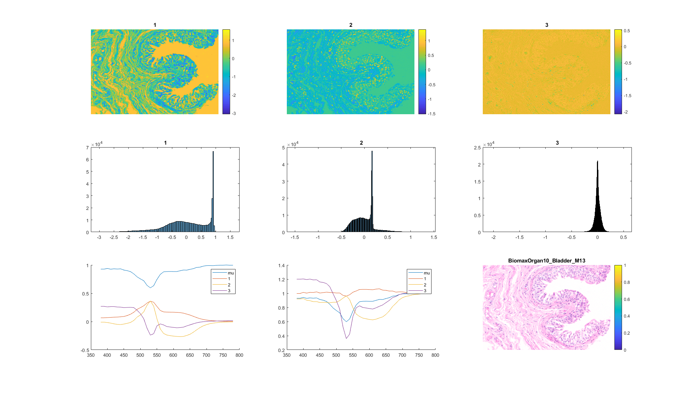
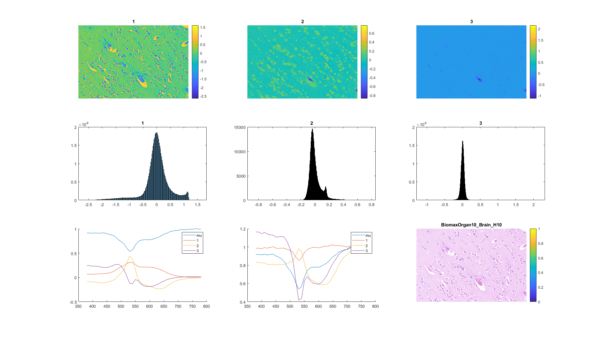
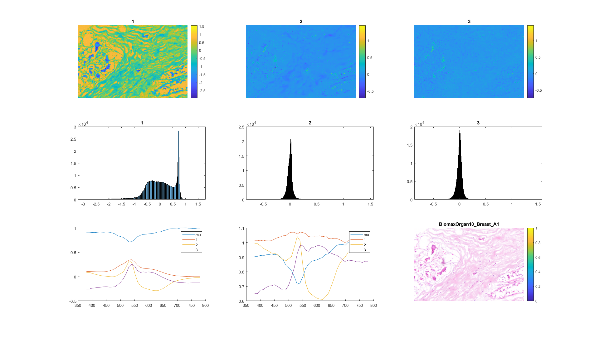
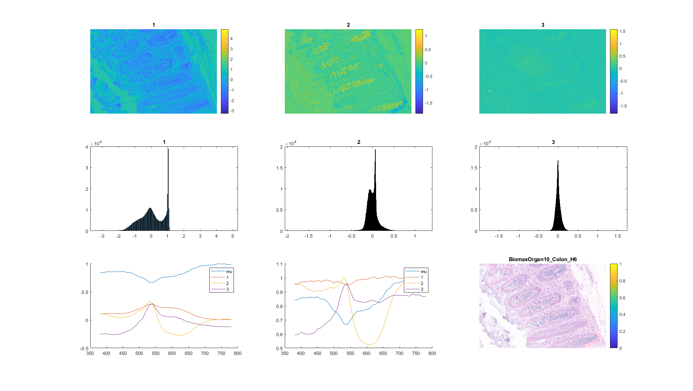
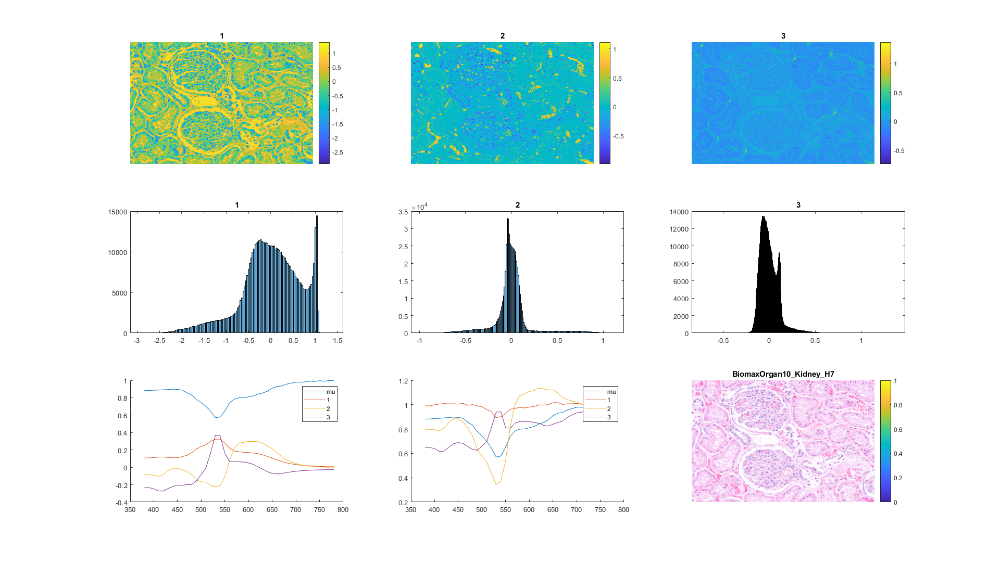
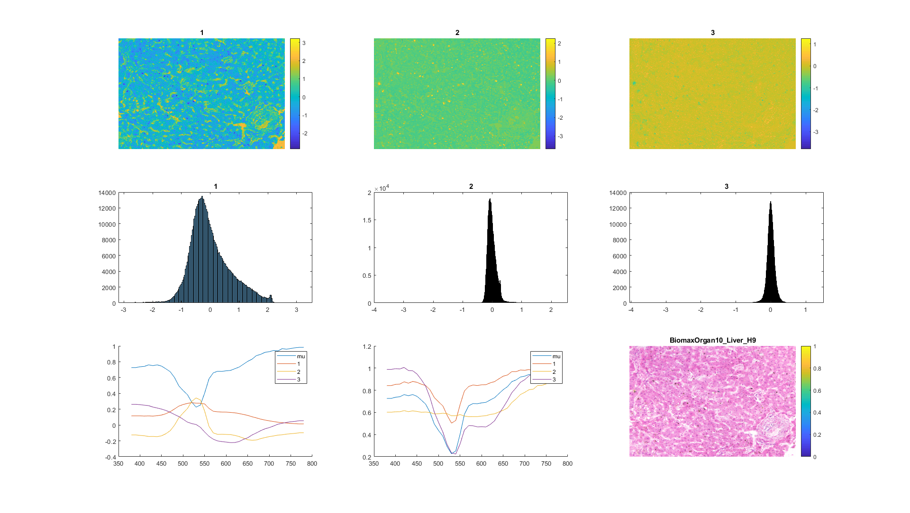
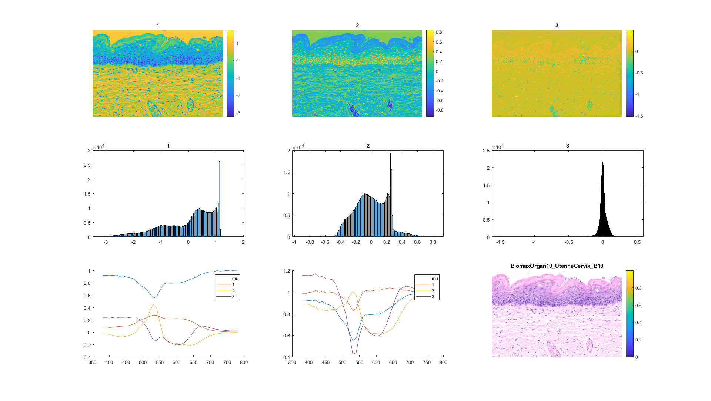
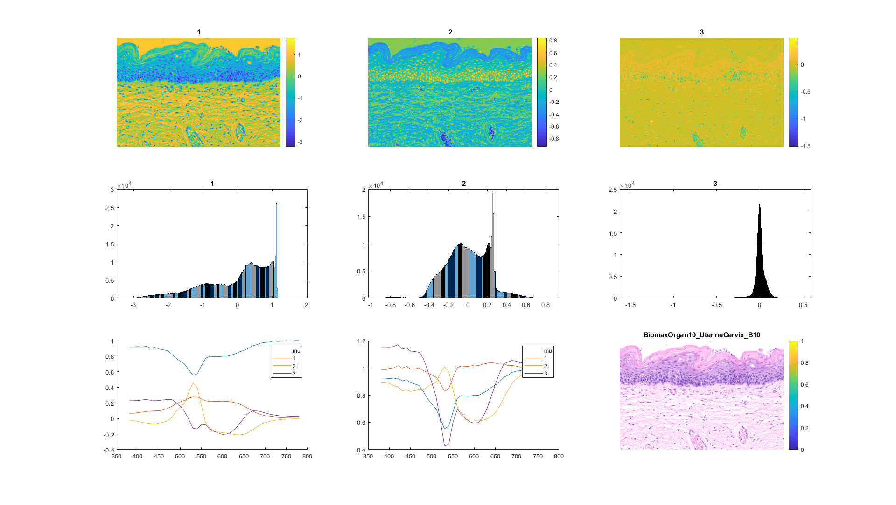

Contents
%%%%%%%%%%%%%%%%%%%%%%%%%%%%%%%%%%%%%%%%%%%%%%%%%%%%%%%%%%% % PCA of spectral spectra % 03-29-2020: First version % 4-8-2020: WCC % for running on WCC's computer % need to addpath: % C:\Users\wcc\Documents\GitHub\paulcode\finding\BiomaxOrgan10 % C:\Users\wcc\Desktop\paul data wsi\MatlabCode_Paul\FilterMeasurements function mypca for i=1:8 mypca_do(i) snapnow end end function mypca_do (organ_id)
WCC = 1 % data paths ncol = 844; nrow = 676; switch organ_id case 1 organ_name = 'BiomaxOrgan10_Bladder_M13' case 2 organ_name = 'BiomaxOrgan10_Brain_H10' case 3 organ_name = 'BiomaxOrgan10_Breast_A1' case 4 organ_name = 'BiomaxOrgan10_Colon_H6' case 5 organ_name = 'BiomaxOrgan10_Kidney_H7' case 6 organ_name = 'BiomaxOrgan10_Liver_H9' case 7 organ_name = 'BiomaxOrgan10_Lung_J7' case 8 organ_name = 'BiomaxOrgan10_UterineCervix_B10' end if WCC == 1 transName_path = ['C:\Users\wcc\Desktop\paul data wsi\Data\ProcessedData\031320\' organ_name '\Transmittance\']; imgTruthName_path = ['C:\Users\wcc\Desktop\paul data wsi\Data\ProcessedData\031320\' organ_name '\EndResults\']; cied65_path = 'C:\Users\wcc\Documents\GitHub\paulcode\input\DataIlluminants\'; end % File names transName = [transName_path 'trans_mean_camera']; imgTruthName = [imgTruthName_path 'truth.tif']; % Load files temp = load(transName); % trans_array_m is 41x570544 trans_array_m = temp.trans_array_m; clearvars temp; % data is 570544x41 data = trans_array_m';
WCC =
1
organ_name =
'BiomaxOrgan10_Bladder_M13'
WCC =
1
organ_name =
'BiomaxOrgan10_Brain_H10'
WCC =
1
organ_name =
'BiomaxOrgan10_Breast_A1'
WCC =
1
organ_name =
'BiomaxOrgan10_Colon_H6'
WCC =
1
organ_name =
'BiomaxOrgan10_Kidney_H7'
WCC =
1
organ_name =
'BiomaxOrgan10_Liver_H9'
WCC =
1
organ_name =
'BiomaxOrgan10_Lung_J7'
WCC =
1
organ_name =
'BiomaxOrgan10_UterineCervix_B10'
data conditioning -- huge difference in PCA!!!
remove 380 nm
data(:,1) = data(:,2);
% remove 780 nm
data(:,end) = data(:,end-1);
Principal Component Analysis
great tutorial: http://www.cs.otago.ac.nz/cosc453/student_tutorials/principal_components.pdf Matlab pca(): https://www.mathworks.com/help/stats/pca.html
[coeff,score,latent,tsquared,explained,mu] = pca(data); sprow = 3; spcol = 3; cbar1 = -3; cbar2 = 2; clf for i = 1:sprow*spcol-6 subplot(sprow,spcol,i) im1 = score(:,i); im2 = reshape(im1,nrow,ncol); imagesc(im2) % colormap gray axis off %axis image %caxis([cbar1 cbar2]) colorbar title([i]) end % show histograms for i = 1:3 subplot(sprow,spcol,1*spcol+i) histogram(score(:,i)) title([i]) end % show spectra subplot(sprow,spcol,sprow*spcol-2) hold on plot(380:10:780,mu') plot(380:10:780,coeff(:,1)) plot(380:10:780,coeff(:,2)) plot(380:10:780,coeff(:,3)) legend('mu','1','2','3') % show spectra subplot(sprow,spcol,sprow*spcol-1) hold on plot(380:10:780,mu') plot(380:10:780,mu'+coeff(:,1)) plot(380:10:780,mu'+coeff(:,2)) plot(380:10:780,mu'+coeff(:,3)) legend('mu','1','2','3') % show the RGB image subplot(sprow,spcol,sprow*spcol) imgTruth = imread(imgTruthName); image(imgTruth) axis off colorbar title(organ_name,'Interpreter','none') return     
 
 % explore the Matlab pca() output results
clf
subplot(6,1,1) hold on plot(390:10:770,coeff(:,1)) plot(390:10:770,coeff(:,2)) plot(390:10:770,coeff(:,3)) xlabel('nm') ylabel('T') title('coef') legend('1','2','3')
subplot(6,1,3) plot(latent(1:5),'o-') title('latent')
subplot(6,1,5) plot(explained(1:5),'o-') title('explained')
subplot(6,1,6) plot(390:10:770,mu) xlabel('nm') ylabel('T') title('mu')
return
end